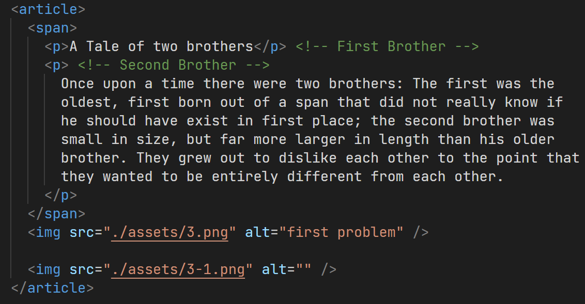
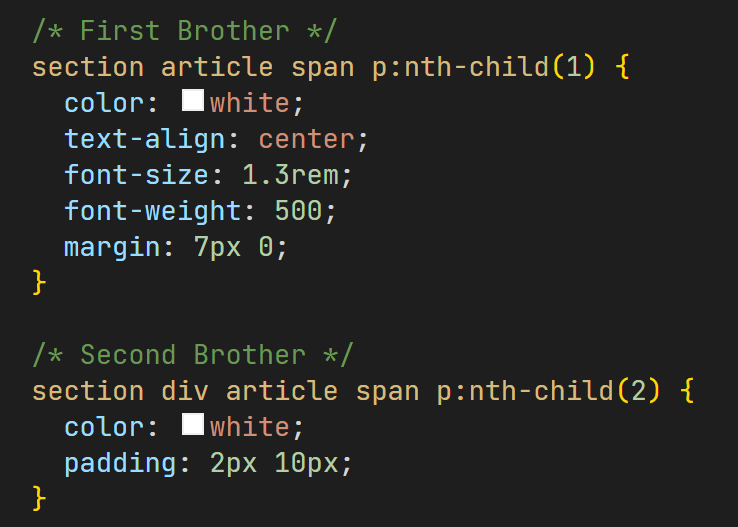
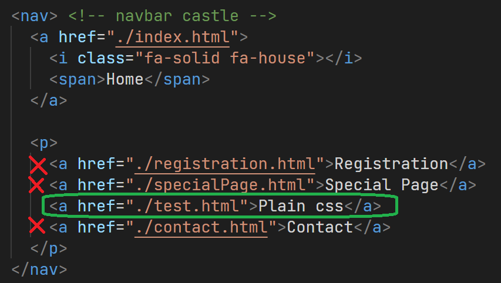
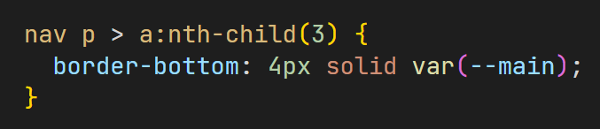
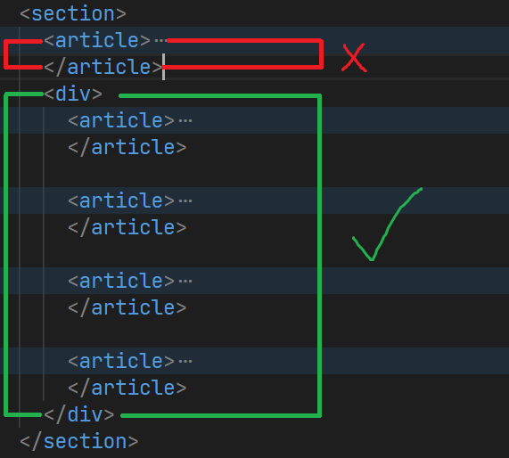
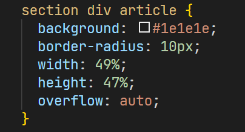
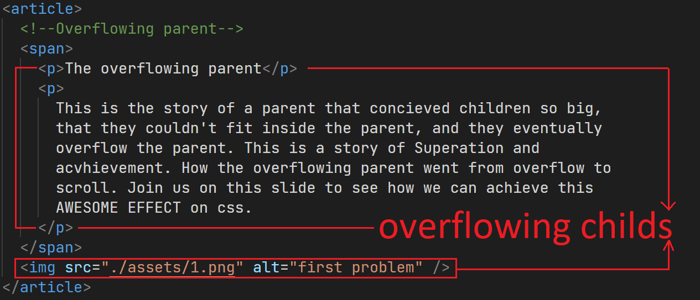
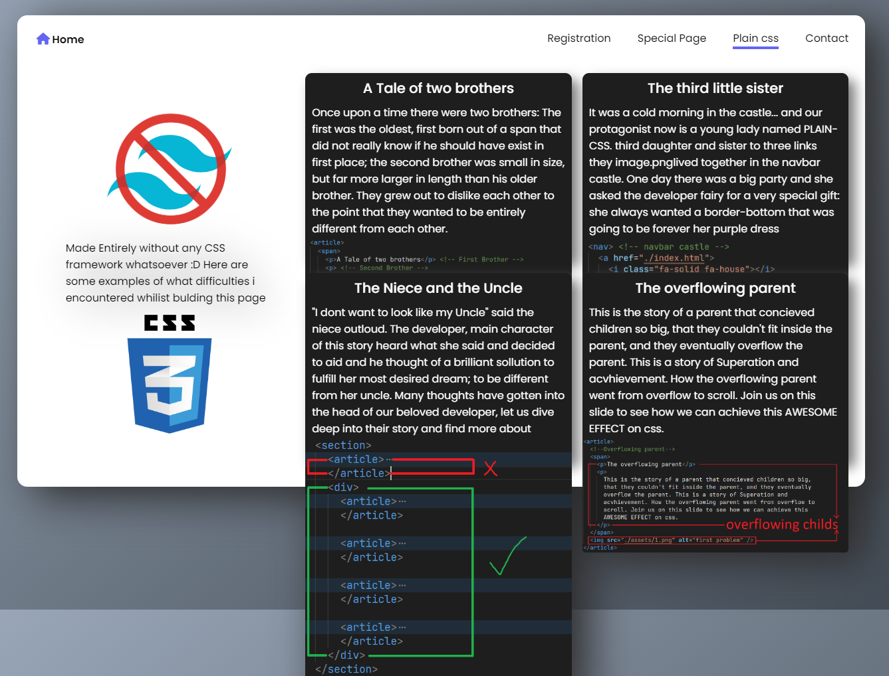
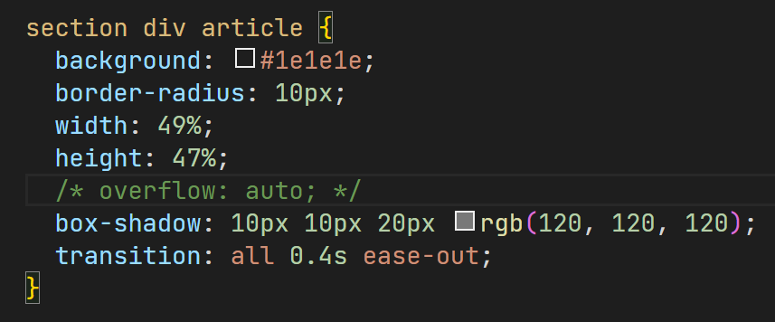
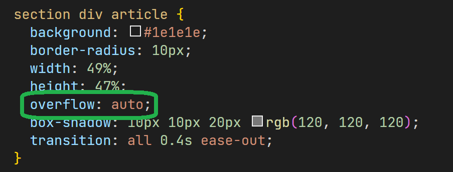

Made Entirely without any CSS framework whatsoever :D Here are some examples of what difficulties i encountered whilist bulding this page
A Tale of two brothers
Once upon a time there were two brothers: The first was the oldest, first born out of a span that did not really know if he should have exist in first place; the second brother was small in size, but far more larger in length than his older brother. They grew out to dislike each other to the point that they wanted to be entirely different from each other.
 The third little sister
It was a cold morning in the castle... and our protagonist now is a young lady named PLAIN-CSS. third daughter and sister to three links. They lived together in the navbar castle. One day there was a big party and she asked her fairy-developer for a very special gift: she always wanted a border-bottom that was going to be forever her purple dress
 The Niece and the Uncle
"I dont want to look like my Uncle" said the niece outloud. The fairy-developer, main character of this story heard what she said and decided to aid and he thought of a brilliant sollution to fulfill her most desired dream; to be different from her uncle. let us dive deep into their story and find more about how he managed to accomplish her wish.
 The overflowing parent
This is the story of a parent that concieved children so big, that they couldn't fit inside the parent, and they eventually overflow the parent. This is a story of Superation and acvhievement, of How the overflowing parent went from overflow to scroll. Join me brothers and sisters on this crusade to made modern cards AWESOME EFFECT on css.
   